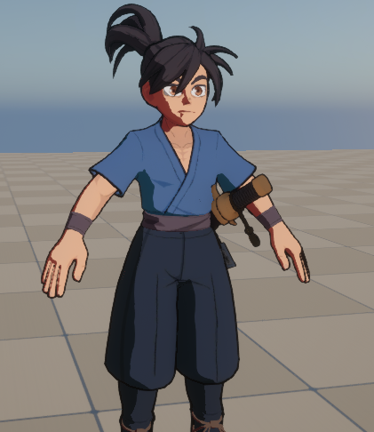
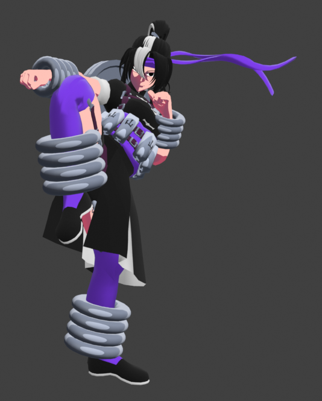

Cosmic Clash
Cosmic Clash is our upcoming platform fighter game being developed in Unreal Engine 5.
What is known currently
Cosmic Clash started development in the summer of 2025 following the launch of Blade of The Yokai. Cosmic Clash will be getting a full reveal in very early 2027, but while we wait, we have confirmed a couple things about the game.
The Fighters
Cosmic Clash features a variety of fighters from across different universes. Here are some of the confirmed characters:

Katsuro
Katsuro comes from our previous game, Blade of the Yokai. A teenage boy from Feudal Japan who lived a normal life until the Demon Lord, Oden, appears and abducts his priestess mother.
Katsuro uses the Blade of The Yokai along with his spiritual power and other weapons he finds along the way to journey across Japan to save his mother and world from the demon realm.
Katsuro is aquintaed with his families Yokai guardian, Tanuki, who guides Katsuro along the way.
{kind=link}

Marabelle
Marabelle hails from a broken world where armies of martial artist rule the world. Two main factions stand at a cross roads to determine the path to fixing the world.
In the midst of the chaos, Marabelle battles as a mercenary who has no side as she searches for answers. Marabelle eventually finds a martial arts dojo deep in a crystal cave,
one that offers a path to tranquility. Despite her agressive fighting style, Marabelle vows to by this new way of life as she must battles to tip the scales of the future in her favor.
The Stages
Cosmic Clash features a stage for every character along with a few others that tie into the main lore of the Cosmic Clash.

Floating Coliseum
The Floating Coliseum sits in a pocket in between universes used for battle against the strongest fighters. While the purpose of the
battles are currently unknown, it is made clear that this coliseum has existed for eons. What would be the reason for bringing together fighters from different universes to this battle coliseum?